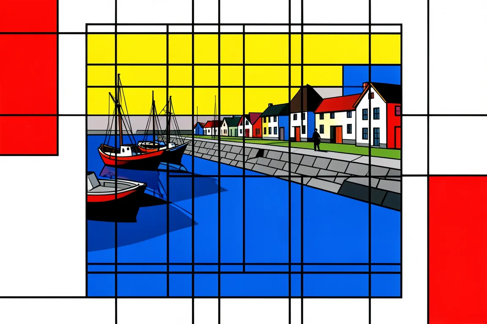

A picture reduced to straight black lines, rectangles of primary colour and white or grey, in asymmetric balance. Mondrian and van Doesburg wanted a universal language of pure relations that could also order a room or a city.

Core thesis
A picture shows universal order when it uses only the horizontal and the vertical, the three primaries and the three non-colours, balanced without symmetry.
Design principles
Use only horizontal and vertical lines, with no diagonal and no curve.
Limit colour to red, yellow and blue, plus white, black and grey.
Draw black lines of 1–3% of the picture width, and extend each line to the edge or to another line.
Let white or grey cover 60–75% of the area, so that the colour is rare and strong.
Make each colour field a rectangle, and make no two fields the same size.
Balance the picture asymmetrically: a large red field against several small fields of blue, yellow and grey.
Hold the lines and fields flat and opaque, so that the picture is a plane with no space behind it.
Anti-patterns
Diagonal or curved lines, except in the rotated lozenge format